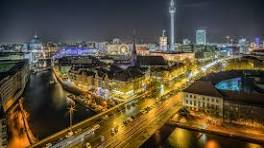

Exploring the Streets of Paris
Posted on January 10, 2025
Paris is known for its stunning architecture, rich culture, and delicious food. During my visit, I explored iconic landmarks such as the Eiffel Tower and Notre-Dame. Here’s a glimpse of what I saw…
Germany and its culture

Posted on January 15, 2025
Neuschwanstein Castle: A historic castle that's steeped in history
Castle: An impressive castle in Nuremberg's historic Old Town
Castle: A memorial to the Prussian royal family that sits on Mount Holstein
Comments
JaneDoe: Looks like an amazing trip! I’ve always wanted to visit Paris.
TravelGuru: Paris is truly magical! Do you recommend any local restaurants?